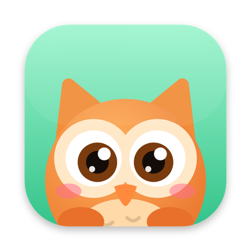
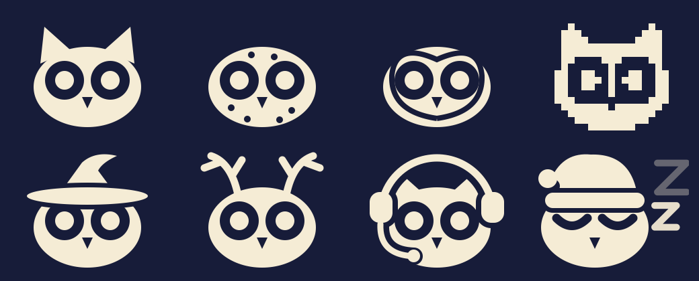

For your Mac menu barA tiny owl that keeps your Mac awake, and knows when to let it sleep.
Pick Zoom, Keynote, OBS or any app. Hootle turns on while it's open and goes back to sleep when it quits.
On battery power it goes to sleep at 10% (you choose the level), so your MacBook never dies overnight.
On for hours with nobody around? It hoots "Anyone there?" and goes to sleep if nobody answers in 15 minutes.
Any length, or until a time of day, with a countdown in the menu bar. Plus a global shortcut, ⌃⌥⌘H.
Keep the screen lit for presenting, or let it dim and lock while a download or build keeps running.
Start awake, asleep or the way you left it, with hoot sounds on or off. All in a small Settings window.
Turn Hootle on for 30 minutes from a shortcut, or keep your Mac awake whenever your Work Focus is on.
See how long Hootle kept your Mac awake this week and month, and share a card of it. Stats never leave your Mac.

Turn on seasonal touches for a witch hat in October and reindeer antlers in December. If Hootle saves your day, you can tip the owl in Settings.
Its eyes follow your cursor.
A headset while Zoom, Teams or FaceTime is open.
Heavy eyes when time's almost up or the battery is low.
A nightcap from 10 PM, awake or asleep.
Downloads, presentations, long builds and video calls keep going without the screen going dark.
Eyes open and blinking means awake. Eyes closed with floating z's means your Mac is back to normal.
A short note and a tiny hoot when it turns on or off, and it tells you why. It never steals focus from what you're doing.
No account, no tracking, no network connections. Hootle doesn't collect anything. Privacy policy